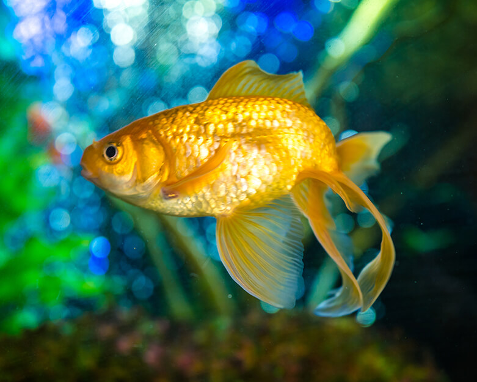

Japon balığı (Carassius auratus), tatlı su akvaryumlarının en eski ve en popüler türlerinden biridir. Çin’de binlerce yıl önce sazan türünden türetilerek evcilleştirilmiş ve zamanla farklı renk, desen ve yüzgeç formlarına sahip birçok varyete geliştirilmiştir. Altın sarısı, kırmızı, beyaz ve siyah tonlarıyla akvaryumlarda estetik bir görünüm sunar. Bu tür, 18–24°C sıcaklıkta, nötr pH değerine sahip sularda sağlıklı şekilde yaşar. Dayanıklı yapısı sayesinde yeni başlayan akvaryum hobisi tutkunları için ideal bir seçimdir. Geniş akvaryumlarda veya süs havuzlarında beslenmeleri önerilir. Uygun koşullarda 10–15 yıl, bazı durumlarda 20 yılın üzerinde yaşayabilirler. Japon balıkları genellikle barışçıl ve sosyal yapıya sahiptir; sürü halinde beslenir ve diğer uyumlu türlerle birlikte yaşayabilirler. Beslenmeleri oldukça çeşitlidir: pul yemler, sebze destekleri (bezelye, marul), canlı yemler ve özel alt yemlerle dengeli bir diyet uygulanabilir. Üreme dönemlerinde yumurtalarını bitkilerin üzerine bırakır. Yavruların sağlıklı gelişimi için ayrı bir ortamda büyütülmeleri tavsiye edilir. Estetik görünümleri ve uzun ömürleriyle Japon balıkları, akvaryum hobisinin vazgeçilmez türlerinden biridir.